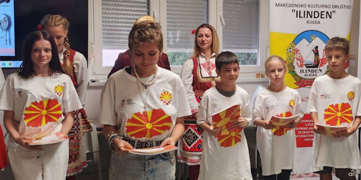
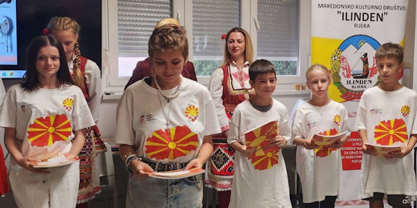

Obavijesti - Radionice
Radionice su osmišljene kako bi učenici kroz praktični rad stekli nove vještine i znanja u raznim područjima.
LJETO DOBRIH PRIČA – ljetne radionice u školskoj knjižnici
U tjednu nakon nastave (24.-28.6) u školskoj će se knjižnici održati 5 kreativnih radionica namijenjene učenicima od 1.- 8. razreda.
Za svaki dan planirana je određena radionica. Svaka radionica počinje u 11:00 i traje do 12:35.
Prijave za radionice traju do ovog petka 21.6. kod razrednika ili u školskoj knjižnici.
Veselimo se druženju 🙂
Radionice Š kolskog - krasopis
Krasopisnu radionicu vodi stroga učiteljica iz 19. stoljeća uz nezaobilazne rekvizite iz tog vremena; odjevena po ondašnjoj modi poučit će Vas hitro kako uspravno sjediti, kako se pristojno vladati i perom lijepo pisati!
Projekt "Više od kiše" 2024.
U sklopu projekta Više od kiše organizirali smo radionicu s volonterima INA-e, tvrtke koja je podržala projekt i prepoznala njegovu važnost za zaštitu okoliša.
Volonteri su zajedno s učenicima sadili sadnice oko sustava za skupljanje kišnice.